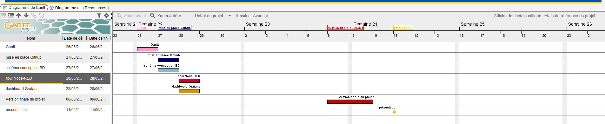

Titre : Mise en place d'une solution informatique pour l’IUT de Blagnac
Groupe : Perin Nicolas - Ardouin Tom
Date : 10/06/25
1. Objectif du projet
Développer une solution pour collecter, traiter et visualiser les données de capteurs des bâtiments de l’IUT via un site web et un dashboard. Elle doit permettre une gestion des utilisateurs selon leurs rôles.
Diagramme de gantt :

2. Technologies utilisées
Catégorie
Outils / Langages
Conteneurisation
Docker (Mosquitto, Node-RED, InfluxDB, Grafana)
Web
HTML5, CSS3, PHP
Scripts
Bash, PHP
Base de données
MySQL (PhpMyAdmin)
Collaboration
GitHub, Trello, Drive
3. Architecture du système
Les capteurs envoient des données MQTT traitées par Node-RED, stockées dans InfluxDB et affichées via Grafana. Le site web PHP interagit avec MySQL pour la gestion et la visualisation des données selon les droits des utilisateurs.
Node-RED :
Grafana:
4. Gestion des utilisateurs
Administrateur : Gère les bâtiments, salles et capteurs.
Gestionnaire : Visualise les données liées à son bâtiment.
Visiteur : Accède à la consultation des dernières mesures.
Ce projet a renforcé nos compétences en développement web, traitement de données IoT et gestion de projet collaboratif. Maleureusement tous les objectifs n'ont pas été atteints, avec possibilité d’ajouts futurs (plus de capteurs, meilleure ergonomie, etc.).